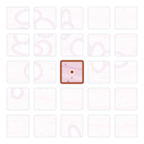
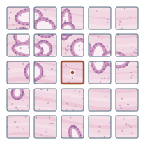
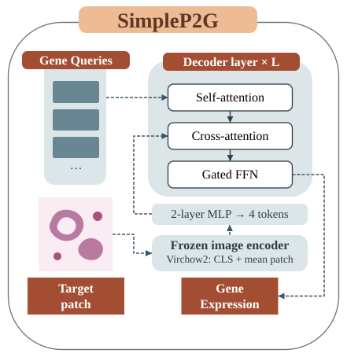

The target patch alone.
Predict expression from the image centered on the target spot.
SimpleP2G1 The Chinese University of Hong Kong2 Zhejiang University
Before adding a more complex prediction head, start with a better image representation. A direct decoder over frozen pathology embeddings is already a strong baseline.
Predict the expression of 200 genes at a tissue spot from its histology image. The single-patch setting uses the target patch alone; the cross-patch setting also uses nearby images. Both predict the same target, without neighboring expression as input.

Predict expression from the image centered on the target spot.
SimpleP2G
Add 24 nearby image patches and their relative positions.
SimpleP2G-crossPrediction heads, image encoders, and spatial context often change together. That makes it difficult to tell which component explains a reported gain.
We separate these factors: upgrade an existing method’s image input, compare heads with a shared encoder, and vary context within one decoder.
HMHVG-200 + HVG-200 · both prediction settings
Arrows connect mean PCC scores on a shared scale for each dataset. Values beside the chart show mean ± sample SD across three matched folds, including the paired PCC changes. † Our adaptation. Download 120 fold pairs ↓
A direct gene-query decoder turns frozen pathology embeddings into gene expression predictions. Spatial context enters through additional image tokens.

Virchow2 represents the target patch. A two-layer MLP maps its embedding to four conditioning tokens.
Learnable gene queries attend to the image tokens through a shared decoder, producing an expression prediction for each gene.
SimpleP2G-cross adds 24 neighboring image tokens with relative positions. The decoder architecture and prediction target stay the same.
Compare all prediction heads with shared Virchow2 features across five HEST-1K datasets. All 300 fits are complete. Each dataset reports the mean and sample SD over three held-out slides, using seed 42 and validation-selected checkpoints. SimpleP2G leads all ten single-patch dataset–panel comparisons; SimpleP2G-cross leads eight of ten cross-patch comparisons. Switch the panel or metric to explore the exceptions.
Predict from the target patch alone.
Predict with additional image context.
Bold marks the best mean in each dataset within the same setting, including ties. SD appears in smaller type.